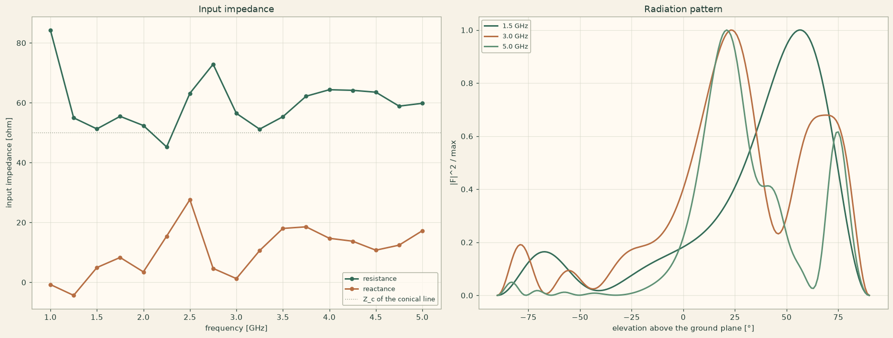
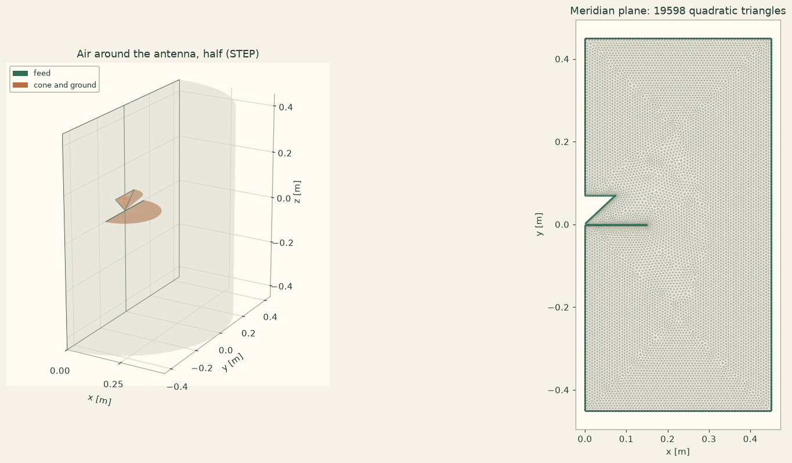

Docs › Examples › Monoconical antenna on a finite ground plane
Antennas · 2D-axisymmetric
Monoconical antenna on a finite ground plane
A metal cone of 47 degrees half angle on a ground disc, fed by a 50 ohm generator at its tip, swept from 1 to 5 GHz.
Run locally with OneSimulation. The example downloads are free. Running them requires an activated runtime. Runtime Alpha 0.2.1a7 · CPython 3.13 on macOS (Apple Silicon), Ubuntu 22.04 (x86-64), and Windows x64. Installation and activation · View pilot plans. Scope of the reference checks.


What it computes
OneSimulation cuts the meridian plane from a half solid of revolution read from STEP and solves the fields E_r, E_z and H_phi with second-order Nedelec elements, a spherical PML and a lumped port across the feed gap; input_impedance gives the impedance and axisymmetric_far_field the radiation pattern and the radiated power. The script that builds the STEP file comes with the notebook.
What it checks
The radiated power from the far field equals the power accepted from the generator, (1 - |S11|^2) W, to 7e-3 at every frequency; above 3 GHz the input impedance oscillates about 59.5 + 13j ohm near the characteristic impedance of the conical line, 50.0 ohm, with |S11| below 0.2.
Geometry
The notebook starts at the import of the CAD file conical_monopole_antenna.step: STEP (AP242), readable by any CAD program, with the names of the faces that the boundary conditions use. Put it next to the notebook.


The geometry script
The script conical_monopole_antenna_geometry.py builds the geometry with the CAD objects of OneSimulation and writes the file. Change a dimension there, run it, and run the notebook again.
"""Geometry of the OneSimulation example "Monoconical antenna on a finite ground plane".
Builds with the CAD objects of OneSimulation, as a half solid of revolution about the z axis, the air
around a monoconical antenna: a metal cone of half angle 47 degrees and slant length 100 mm with a
flat top, standing on a thin feed wire (radius 1 mm, gap 2 mm) above a ground disc of radius 150 mm
and thickness 2 mm, in a box reaching 450 mm from the axis and from the ground plane.
File conical_monopole_antenna.step names the faces port (the surface of the feed wire, where the
generator acts), metal (cone and ground) and outer (the walls of the box); the axis is left unnamed.
"""
import numpy as np
from onesim.cad.d2 import Path, Profile, Segment
from onesim.cad.d3 import Revolution
half_angle, slant, wire, gap, ground, plate, box = (
np.radians(47.0),
0.1,
0.001,
0.002,
0.15,
0.002,
0.45,
)
top = (wire + slant * np.sin(half_angle), gap + slant * np.cos(half_angle))
outline = Path(
(0.0, box),
(
Segment((0.0, top[1]), name="axis"),
Segment(top, name="metal"),
Segment((wire, gap), name="metal"),
Segment((wire, 0.0), name="port"),
Segment((ground, 0.0), name="metal"),
Segment((ground, -plate), name="metal"),
Segment((0.0, -plate), name="metal"),
Segment((0.0, -box), name="axis"),
Segment((box, -box), name="outer"),
Segment((box, box), name="outer"),
Segment((0.0, box), name="outer"),
),
)
Revolution(profile=Profile(outline), angle=np.pi).rotated((0, 0, 1), -np.pi / 2).save(
"conical_monopole_antenna.step"
)The notebook
The complete notebook, cell by cell. Run it to produce the figures and the comparison printout.
A cone standing with its tip on a ground plane is a broadband antenna: the cone and the plane form a conical transmission line that guides a spherical TEM wave outward from the feed with the characteristic impedance \(Z_c=60\ln\cot(\theta_0/2)\) for the half angle \(\theta_0\). A half angle of 47° gives \(Z_c\approx50\ \Omega\), so the antenna matches a 50 Ω generator once the cone is long compared with the wavelength. A finite cone and ground disc reflect part of the wave and tilt the radiation pattern.
Here the cone has a slant length of 100 mm and a flat top; the ground disc has a radius of 150 mm. The generator drives the gap of 2 mm between the ground and the cone tip, across a thin feed wire. Everything is symmetric about the axis, and the TEM wave has only \(E_r\), \(E_z\) and \(H_\varphi\): OneSimulation solves the meridian plane with polarization="Erphiz" and azimuthal_mode=0, and LumpedPort feeds the gap with 1 W from a 50 Ω generator.
| boundary | condition |
|---|---|
port (feed wire surface) | lumped port, 50 Ω, 1 W available |
metal (cone, ground disc) | perfect conductor |
outer (box walls) | perfect conductor behind a spherical PML from 350 to 450 mm |
The air comes from conical_monopole_antenna.step, written by conical_monopole_antenna_geometry.py with the CAD objects of OneSimulation.
Reference. (i) The characteristic impedance of the infinite conical line over an infinite plane, \(Z_c=60\ln\cot(\theta_0/2)=50.0\ \Omega\) (Schelkunoff, Electromagnetic Waves, 1943; Balanis, Antenna Theory, 4th ed., §9.3); the impedance of the finite antenna oscillates about it, less and less as the cone grows longer than the wavelength. (ii) Energy balance: the power radiated through the far field, \(P_\mathrm{rad}=\frac{1}{2\eta_0}\oint|\mathbf F|^2\,\mathrm d\Omega\), equals the power the antenna accepts from the generator, \(P_\mathrm{acc}=(1-|S_{11}|^2)\cdot1\) W.
import numpy as np
from onesim.cad.exchange import load
from onesim.materials import VACUUM_PERMEABILITY, VACUUM_PERMITTIVITY
from onesim.materials.electromagnetic import (
IsotropicElectromagneticMaterial,
spherical_pml,
)
from onesim.meshing import TriangularMesher
from onesim.numerics import Numerics
from onesim.numerics.fem import FiniteElement, Nedelec, RevolvedH1SpaceFactory
from onesim.numerics.linear import ComplexSparseDirect
from onesim.physics.electromagnetics import (
FrequencyDomainMaxwell,
LumpedPort,
PerfectElectricConductor,
axisymmetric_far_field,
input_impedance,
)
from onesim.simulation import Problem, Simulation
from onesim.visualization import plots, theme
theme.set()
light = 1 / np.sqrt(VACUUM_PERMEABILITY * VACUUM_PERMITTIVITY)
eta = np.sqrt(VACUUM_PERMEABILITY / VACUUM_PERMITTIVITY)Geometry and mesh
section with the plane \(y=0\) gives the meridian plane (\(x=r\)). Quadratic triangles of 7 mm (eight per wavelength at 5 GHz), refined to 0.7 mm at the feed gap and 2 mm on the cone.
air = load("conical_monopole_antenna.step")
meridian = air.section((0, 1, 0))
faces = meridian.boundaries
mesh = TriangularMesher(
target_size=0.007, local_sizes={"port": 0.0007, "metal": 0.002}, grading=0.25
).generate(meridian)
fig = plots.figure(1, 2, size=(14, 6.5))
plots.geometry(
air,
selection={"feed": air.boundaries.port, "cone and ground": air.boundaries.metal},
labels=False,
camera=plots.Camera(elevation=20, azimuth=-60),
title="Air around the antenna, half (STEP)",
ax=fig[0],
)
plots.mesh(
mesh,
groups=("all",),
legend=False,
title=f"Meridian plane: {mesh.cell_count} quadratic triangles",
ax=fig[1],
)
plots.show()Model
One solve per frequency from 1 to 5 GHz in steps of 0.25 GHz.
model = lambda frequency: FrequencyDomainMaxwell(
domain=meridian.domain(),
frequency=frequency,
material=spherical_pml(IsotropicElectromagneticMaterial(), 0.35, 0.45),
polarization="Erphiz",
azimuthal_mode=0,
phasor_convention="exp(-i*omega*t)",
amplitude_convention="peak",
)
numerics = Numerics(
spatial=FiniteElement(element=Nedelec(order=2), provider=RevolvedH1SpaceFactory()),
linear_solver=ComplexSparseDirect(),
)
solve = lambda m: Simulation(
problem=Problem(
name="Monocone",
geometry=meridian,
physics=(m,),
boundary_conditions=(
LumpedPort(
physics=m, boundary=faces.port, impedance=50.0, incident_power=1.0
),
PerfectElectricConductor(physics=m, boundary=faces.metal | faces.outer),
),
),
mesh=mesh,
numerics=numerics,
).solve_stationary()
frequencies = np.arange(1.0e9, 5.01e9, 0.25e9)
runs = {f: (solve(m := model(f)), m) for f in frequencies}Results
Input impedance (in the engineering convention \(e^{+j\omega t}\), the conjugate of the solver's phasors), reflection coefficient against 50 Ω, and the energy balance from the far field.
impedance = np.array([np.conj(input_impedance(*runs[f])) for f in frequencies])
reflection = np.abs((impedance - 50.0) / (impedance + 50.0))
theta = np.linspace(0, np.pi, 181)
radiated = np.array(
[
np.pi
/ eta
* np.trapezoid(
np.sum(
np.abs(axisymmetric_far_field(*runs[f], theta, 0.0, radius=0.3)) ** 2,
axis=1,
)
* np.sin(theta),
theta,
)
for f in frequencies
]
)
characteristic = 60 * np.log(1 / np.tan(np.radians(47.0) / 2))
print(f"characteristic impedance of the conical line: {characteristic:.2f} ohm")
print(
"f [GHz] slant / wavelength Z_in [ohm] |S11| P_rad [W] P_acc [W] difference"
)
for f, z, s, p in zip(frequencies, impedance, reflection, radiated):
print(
f"{f / 1e9:7.2f} {0.1 * f / light:18.2f} {z.real:7.2f} {z.imag:+8.2f}j {s:10.4f} {p:11.4f} {1 - s**2:11.4f} {p / (1 - s**2) - 1:+11.1e}"
)
long = frequencies >= 3e9
print(
f"above 3 GHz (cone longer than one wavelength): mean resistance {impedance[long].real.mean():.1f} ohm, mean reactance {impedance[long].imag.mean():+.1f} ohm, "
f"largest |S11| {reflection[long].max():.3f}"
)Figure
Left: the input impedance against frequency with the characteristic impedance of the conical line. Right: the radiation pattern \(|\mathbf F|^2\) in the elevation plane at 1.5, 3 and 5 GHz, normalized to its maximum; the finite ground plane lets part of the power radiate below the horizon.
fig = plots.figure(1, 2, size=(16, 6))
plots.line(
frequencies / 1e9,
{"resistance": impedance.real, "reactance": impedance.imag},
markers=True,
hlines={"Z_c of the conical line": characteristic},
xlabel="frequency [GHz]",
ylabel="input impedance [ohm]",
title="Input impedance",
legend="lower right",
ax=fig[0],
)
plots.line(
90 - np.degrees(theta),
{
f"{f / 1e9:.1f} GHz": (lambda p: p / p.max())(
np.sum(
np.abs(axisymmetric_far_field(*runs[f], theta, 0.0, radius=0.3)) ** 2,
axis=1,
)
)
for f in (1.5e9, 3.0e9, 5.0e9)
},
xlabel="elevation above the ground plane [°]",
ylabel="|F|^2 / max",
title="Radiation pattern",
legend="upper left",
ax=fig[1],
)
plots.show()Going further
Change the half angle in conical_monopole_antenna_geometry.py: 30° raises the characteristic impedance to about 79 Ω. A larger ground disc pulls the main lobe down towards the horizon.